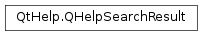

QHelpSearchResult¶
Detailed Description¶
The
PySide2.QtHelp.QHelpSearchResultclass provides the data associated with the search result.The
PySide2.QtHelp.QHelpSearchResultobject is a data object that describes a single search result. The vector of search result objects is returned byQHelpSearchEngine.searchResults(). The description of the search result contains the document title and URL that the search input matched. It also contains the snippet from the document content containing the best match of the search input.See also
-
class
PySide2.QtHelp.QHelpSearchResult¶ -
class
PySide2.QtHelp.QHelpSearchResult(other) -
class
PySide2.QtHelp.QHelpSearchResult(url, title, snippet) Parameters: - snippet – unicode
- other –
PySide2.QtHelp.QHelpSearchResult - title – unicode
- url –
PySide2.QtCore.QUrl
Constructs a new empty
PySide2.QtHelp.QHelpSearchResult.Constructs a copy of
other.Constructs the search result containing
url,titleandsnippetas the description of the result.
-
PySide2.QtHelp.QHelpSearchResult.snippet()¶ Return type: unicode Returns the document snippet containing the search phrase of the search result.
-
PySide2.QtHelp.QHelpSearchResult.title()¶ Return type: unicode Returns the document title of the search result.
-
PySide2.QtHelp.QHelpSearchResult.url()¶ Return type: PySide2.QtCore.QUrlReturns the document URL of the search result.
© 2018 The Qt Company Ltd. Documentation contributions included herein are the copyrights of their respective owners. The documentation provided herein is licensed under the terms of the GNU Free Documentation License version 1.3 as published by the Free Software Foundation. Qt and respective logos are trademarks of The Qt Company Ltd. in Finland and/or other countries worldwide. All other trademarks are property of their respective owners.